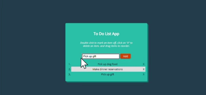

Overview
ToDo is a web application that allows users to create a todo list. Users can add and delete tasks. They can update it as they complete the tasks by crossing off, or rearranging if the user would like to update the order.
Purpose & Context
This was created as a small project to practice using React Redux.
Approach
Technologies: JQuery, Redux, CSS
- Installed Redux
- Created actionTypes file to add actions todo and toggle todo
- Wrote actions and action creators for strikethrough the completed todo items
- Created reducer folder to house the file that allows the user to switch between different action types
- Used the store to dispatch the actions
- Implemented action type and action creator for deleting a single To-Do item
- Implemented the reducer for deleting a single to-do item
- Hosted on GitHub Pages
Challenges
For the most part this application was put together without much difficulty. Learning Redux took a little extra research on the internet, but there were many resources that helped me understand pretty quickly. Next time I make a todo app, I would like to add a button that would add a new todo list. This way the user can have multiple lists on their page. They can separate the tasks by time frame, importance, category, etc.
Duration
This is a small project and it was completed within a day.
Credits
Role: Lead developer
Tutor: Andrew Muscara
Mentor: Alexis Gormley